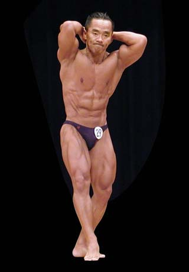
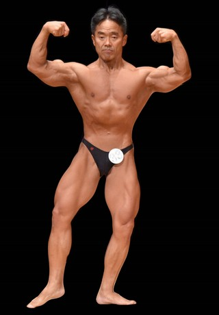
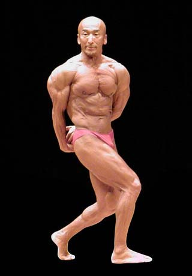
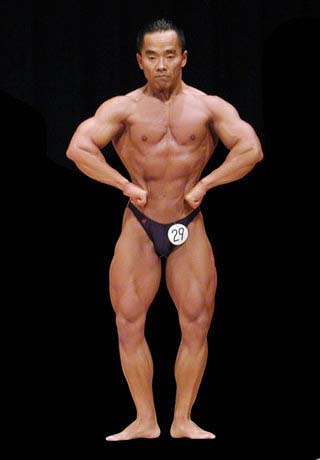
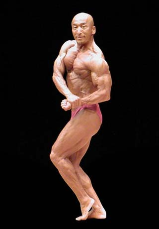
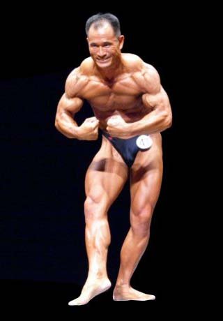

きんにく!
ルール説明
ランダムにカードが配られるので、手札の2枚を合わせた合計点数が相手より上回っていれば勝ち。
ボディビルのポージングによって、各点数が異なってきます。
おのれの筋肉を見せつけましょう。
※手札を変えるボタンはどれか1回しか押すことができないので注意してください。
各ポージングと点数は以下のようにします。
アブドミナルアンドサイ：1点
アブドミナルは腹筋、サイは脚を意味し、腹筋と脚を強調するポーズです。 腹筋はどれだけ脂肪が少なく絞ってあるかという面が見られますが、脚の方は太さとカットと、両方が審査の対象として見られます。
ダブルバイセップス：2点
バイセップスとは上腕二頭筋を意味します。両腕を曲げた状態で上腕二頭筋を見せ、さらにその体勢を前から見せるということでこの名になっています。 両腕を上げていることから逆三角形の体型や腹筋、身体全体のバランスなどを全て見ることができます。
サイドトライセップス：3点
トライセップスは上腕三頭筋を意味します。腕を横から見せて、上腕三頭筋を強調するポーズです。 横向きの体勢ということで、腕の太さ以外にも、胸の厚みや脚の厚みなど、身体の凹凸が見られるポーズです。
ラットスプレッド：4点
ラットは背中の筋肉を意味し、スプレッドは広げるという意味ですので、背中の筋肉を広げたポーズという意味になります。 脇の下に見える筋肉は広背筋で、背中の筋肉であり、逆三角形の体型を形作っている筋肉です。
サイドチェスト：5点
サイドは横、チェストは胸で、胸を強調したところを横から見るという意味のポーズです。 胸の厚みを始めとして、腕の太さや背中や脚など、主に横から身体の厚みを見る他、肩の大きさも強調します。
モストマスキュラー：6点
身体をやや前傾にして、首の横の僧帽筋や肩の大きさ、腕の太さを強調するポーズです。最も力強いという意味があります。 基本ポーズには含まれていませんので、フリーポーズの時だけ見ることができます。